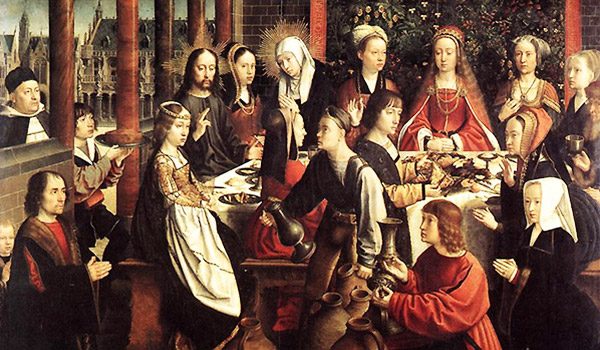

Por graça, Nossa Senhora tem seu coração inflamado de amor por Deus, por isso é exigente consigo mesma, entregando-se inteiramente ao Senhor desde a sua mais tenra idade. Segundo a Tradição da Igreja, ainda em sua infância a Menina Maria foi consagrada ao serviço do Templo, por seus pais, São Joaquim e Santa Ana. Em consequência desse amor ardente para com Deus, a Virgem de Nazaré amou ardorosamente o próximo. O amor da Virgem Maria era tão grande e exigente, que de certa forma ela ensinou Deus a amar, quando disse a seu Filho Jesus Cristo, na festa de casamento em Caná: “Eles já não tem vinho” (Jo 2, 3). A princípio, o Filho de Deus relutou, dizendo à sua Mãe: “Mulher, isso compete a nós? Minha hora ainda não chegou” (Jo 2, 4). No entanto, a resposta aparentemente negativa de seu Filho não desanimou a Mãe. O amor a Deus e ao próximo da Virgem Maria, mostrou-se também exigente com aqueles que serviam as mesas: “Fazei o que eles vos disser” (Jo 2, 5). A pedido de Jesus, estes encheram seis talhas de mais ou menos cem litros cada. Os serventes certamente tiveram muito trabalho para encher as talhas, pois naquele tempo não havia as facilidades de hoje. Mas, este ato de amor tão exigente, que pediu a Virgem Maria aos serventes, foi recompensado pelo Senhor, com seiscentos livros do melhor vinho (cf. Jo 2, 10). Ao mesmo tempo, nesse milagre realizou-se o primeiro ato de amor público de Jesus Cristo, alcançado pela intercessão amorosa da Virgem Maria.  O contínuo ato de amor da Virgem Maria para com Deus Deus, que é amor, veio ao mundo para acender em todos nós a chama do Seu divino amor; mas nenhum coração ficou tão abrasado como o Coração de sua Mãe Santíssima. O Coração da Virgem Maria, desapegado das coisas terrenas, estava inteiramente disposto para arder neste santo fogo de amor. Por isso, o Coração de Maria se tornou todo fogo e chamas, como lemos nos Cânticos sagrados em latim: “Lampades eius, lampades ignis atque flammarum”; e em português: “As suas lâmpadas são umas lâmpadas de fogo e de chamas” (Ct 8, 6). “Fogo, ardendo interiormente, como explica Santo Anselmo, e chamas, resplandecendo para fora com o exercício das virtudes”. A própria Virgem Maria revelou a Santa Brígida que, neste mundo, ela não teve outro pensamento, outro desejo, nem outro gosto, senão Deus. Sua alma bendita, consumida sempre nesta terra na contemplação de Deus, fazia inúmeros atos de amor. Maria Santíssima “não multiplicava os atos de amor, como fazem os outros santos; mas, por um privilégio singular, ela amou a Deus atualmente com um contínuo ato de amor”2. Como uma águia, sempre tinha os olhos fixos no Sol divino, que é Jesus Cristo, por isso, as ações cotidianas não lhe impediam o amor, nem o amor lhe impedia a ação. Santo Ambrósio, São Bernardino e outros santos, diziam que “nem mesmo o sono interrompia o ato de amor da Santíssima Virgem; de modo que podia verdadeiramente dizer com a sagrada Esposa”3: “Ego dormio, et cor meum vigilat”, ou seja, “Eu durmo e o meu coração vela” (Ct 5, 2). O altar propiciatório, cujo fogo nunca se extinguia, nem de dia, nem de noite, foi figura de Maria. Santo Alberto Magno ensinava que Maria foi cheia de tão grande amor que quase não cabia mais amor nela, uma simples criatura terrestre. “Os próprios serafins podiam descer do céu, para aprenderem no Coração de Maria como se deve amar a Deus. No reino celeste ela só, entre todos os santos, pode dizer a Deus: Senhor, se não Vos amei quanto mereceis, ao menos amei-Vos quanto me foi possível”4.